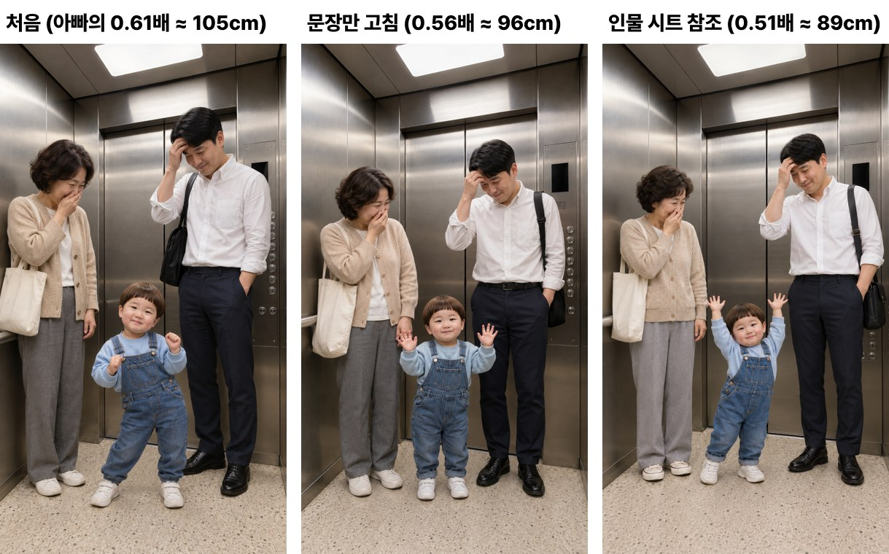
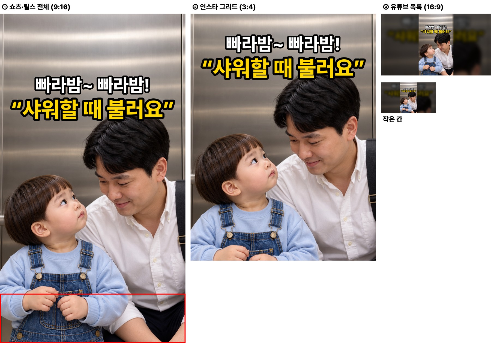
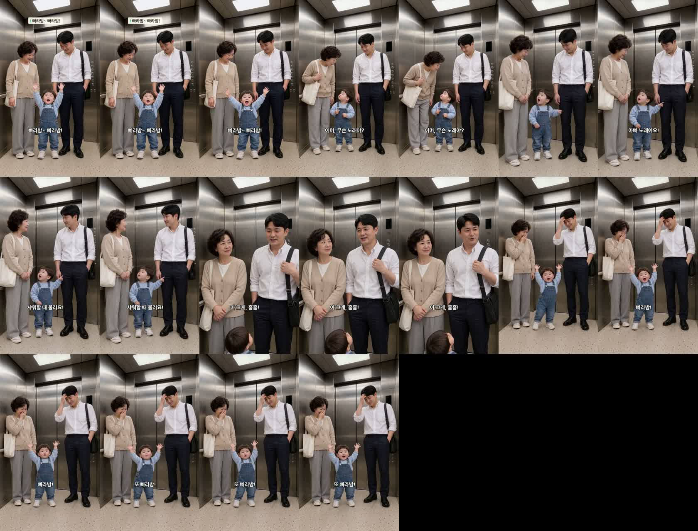

출근길 엘리베이터에서 두 살이 부른 노래의 주인 — 다시 만든 판
18.5초 · 5컷 · 새 방식 연기 지시 · 아직 업로드 대기열에 올리지 않았습니다(대표님 «업로드 대기로» 뒤에 등록)
고친 것 · 봐 주셔야 할 것
- 도윤이 키 — «5~6살처럼» 지적 → 아빠 키의 0.51~0.56배(약 89~96cm)로 줄였습니다. 실제 24개월 평균 87cm(아빠의 0.50배)에 가까운지 봐 주세요.
- 장소 — 대표님이 고르신 A(좁은 승객용 칸 안). 안/밖 섞임 없음.
- 끝 컷 — «빠라밤! 또 빠라밤!»을 한 번 더 부르고, 그 사이 아주머니는 입을 가리고 아빠는 이마를 짚습니다.
- 썸네일 — 아빠·도윤이 투샷 · 흰 줄 «빠라밤~ 빠라밤!» · 노란 줄 «샤워할 때 불러요».
도윤이 키 — 처음 → 문장만 고침 → 인물 시트 참조

대사 · 실측
| 컷 | 누가 | 대사 | 받아쓰기 | 음높이 |
|---|---|---|---|---|
| 1 | 도윤이 | 빠라밤~ 빠라밤! | 팔라밤 팔라밤 | 347Hz |
| 2 | 이웃 아주머니 | 어머, 무슨 노래야? | 어머 무슨 노래야? | 241Hz |
| 3 | 도윤이 | 아빠 노래예요! 샤워할 때 불러요! | 아빠 노래예요. 샤워할 때 불러요. | 344Hz |
| 4 | 아빠 | 아 그게, 흠흠! | 아... 그게... | 174Hz |
| 5 | 도윤이 | 빠라밤! 또 빠라밤! | 빨라밤! 또 빨라밤! 또 빨라밤! | 333Hz |
썸네일

기계 검사
- D0~D8 · 시작 그림 이탈 · 컷 안 장면 튐 검사 통과 · 컷마다 한 사람만 말함 · 도윤 음높이 전부 330Hz 위
- 자리(아주머니 왼쪽 손잡이·아빠 버튼판 옆·도윤 가운데)·옷·가방이 처음부터 끝까지 같음 · 문 닫힌 채
1초 간격 프레임
